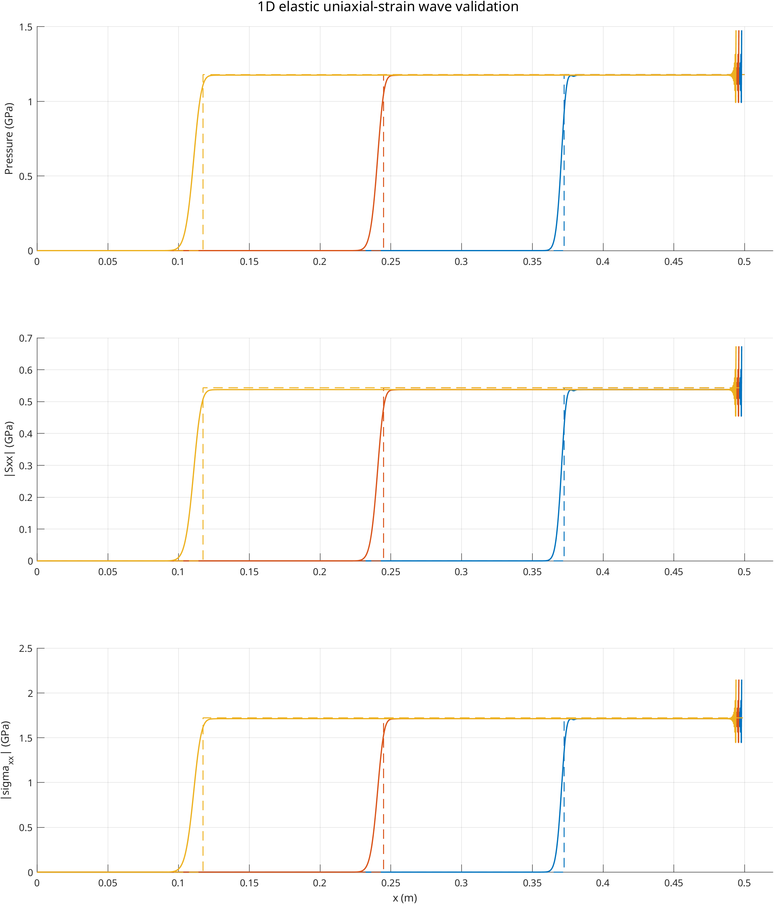

1D 弹性单轴应变波验证
概述
右侧刚性活塞以恒定速度推动铝质线弹性杆，杆左端固定，系统中传播的是一维弹性单轴应变压缩波。该算例不涉及飞片撞击、塑性屈服或非线性 Hugoniot 关系，因此适合用于检验 GASPHiA 在线弹性波速、压力平台、偏应力平台以及总轴向应力平台上的计算准确性。
本次运行结果：
- 纵波波速相对理论误差约
1.80% - 压力平台相对理论误差约
0.24% - 0.27% - 偏应力平台相对理论误差约
1.01% - 1.04% - 总轴向应力平台相对理论误差约
0.48% - 0.51%
若后续需修改弹性 EOS、强度模型、应力更新或边界处理，该算例适合用作快速回归验证。

---
理论解与验证指标
对于一维弹性单轴应变压缩波，理论关系为：
\[
c_L = \sqrt{\frac{K + 4G/3}{\rho_0}}
\]
\[
\varepsilon_{xx} = \frac{U_p}{c_L}
\]
\[
P = K \varepsilon_{xx}
\]
\[
|S_{xx}| = \frac{4G}{3}\varepsilon_{xx}
\]
\[
|\sigma_{xx}| = P + |S_{xx}| = \rho_0 c_L U_p
\]
本算例采用的参数是：
- 初始密度：
\rho_0 = 2700 kg/m^3 - 体模量：
K = 75.2 GPa - 剪切模量：
G = 26.0 GPa - 活塞速度：
U_p = 100 m/s
据此得到的理论值为：
| 量 | 理论值 | ||
|---|---|---|---|
纵波波速 c_L | 6378.98 m/s | ||
压力平台 P | 1.1789 GPa | ||
| 偏应力平台 ` | Sxx | ` | 0.5435 GPa |
| 总轴向应力平台 ` | \sigma_{xx} | ` | 1.7223 GPa |
模拟结果应对比以下指标：
- 波头传播速度是否接近
c_L - 波后压力平台是否接近理论值
- 波后偏应力平台是否接近理论值
- 总轴向应力平台是否稳定，并且量级正确
---
运行方式
测试目录：
GASPHiA-Tests/1D_Elastic_Uniaxial_Strain_Wave
执行以下命令启动：
./run_all.sh --source-dir /path/to/GASPHiA --cuda 0
脚本依次完成以下步骤：
- 编译初始条件生成器
- 生成
input/input_1d_uniaxial_strain.h5 - 使用本目录的
para.cuh编译 GASPHiA - 运行
ust.ini - 对输出结果做后处理并生成验证图
需要说明的工程细节：编译时通过 PARA_CUH 指向本算例目录下的 para.cuh，而非将测试参数复制进主源码目录。这样在不同测试之间切换时不会污染主工程的参数配置。
---
结果解读
上方的验证图给出了 20 us、40 us 和 60 us 三个时刻的数值结果，并与理论平台进行了对比。三行分别对应：
- 压力
P - 偏应力绝对值
|Sxx| - 总轴向应力绝对值
|\sigma_{xx}|
从图中可观察到以下关键特征：
- 波头以稳定速度从右向左传播，且位置与理论波速给出的参考位置接近。
- 波后平台平坦，未出现非物理振荡。
- 压力、偏应力和总应力三个量级均落在理论值附近，表明 EOS 与应力分解的耦合是自洽的。
与更复杂的冲击算例相比，该测试不涉及波系干涉、破碎、塑性或孔隙压实等复杂过程。其价值在于结构简单，便于在出现偏差时精准定位到具体实现模块。
---
实际运行数据
本次运行提取的关键指标如下。
波速
| 指标 | 数值 |
|---|---|
理论波速 cL_ref | 6378.98 m/s |
数值波速 cL_num | 6494.04 m/s |
| 相对误差 | 1.80% |
三个采样时刻的平台指标
| 时间 | 波头位置误差 | 压力平台误差 | 偏应力平台误差 | 总应力平台误差 |
|---|---|---|---|---|
20 us | -2.06 mm | 0.24% | 1.01% | 0.48% |
40 us | -4.24 mm | 0.26% | 1.03% | 0.50% |
60 us | -6.67 mm | 0.27% | 1.04% | 0.51% |
从平台量的角度看，结果整体稳定，尤其是压力和总应力误差均控制在较低水平。波头位置误差随传播时间有轻微累积，但整体量级仍在可接受范围内。